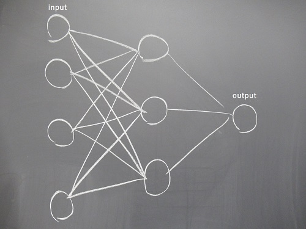
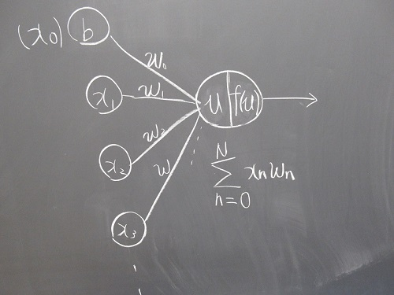

数年前からよく耳にするようになった、人工知能とは、どのように定義されているのだろうか。 ディープラーニングなどを用いて、自身でデータを学習し、類推・分類を行うプログラムなのか。 はたまた、人間と同じゲーム（ボードゲームなど含め）がプレイ出来たら、それだけで、人工知能と呼ぶことが出来るのか。 最近、人間の考えたアルゴリズムに従っているだけで、自身で学習しないものも、人工知能と呼ばれているような気がする。 私は全く詳しくないので、自分の作ったものを人工知能と呼ぶのが正しいのか分からないが、「人工知能」と宣伝した方が、宣伝効果があると思うので、勝手にこれを人工知能と呼ぶことにする。
今回作ったのは、ニューラルネットワークの重み推定を遺伝的アルゴリズムによって行う、neuro-evolutionという手法を用いた、ゲームをプレイする人工知能（勝手にそう呼ぶ）である。学習させるゲームはFlappyBirdを模倣したものにした。 その理由はいくつかある。1つ目は、FlappyBirdはルールが単純で、作りやすいから。2つ目は、インターネット上で学習の成功例があったことだ。つまり、この研究はn番煎じ（$n\in\mathbb{N}$）である。 （車輪の再発明という言葉があるが、私は、勉強の為ならそれは無駄なことでは無いと思う。）
画面を流れる棒に当たらないよう、ジャンプして、隙間をよける。
ニューラルネットワークの重みを、遺伝的アルゴリズムによって推定する方法。

人間の脳内にある神経細胞（ニューロン）とニューロン同士がなす神経網 を模倣した情報処理システムであり、学習させる（≒ニューロン同士の結合の重みを変化させる）ことで分類やパターン認識ができる。
 ネットワークを構成する人工ニューロンの図。 前の層からの信号は、次の層のニューロンに伝わるときに重みづけされる。 重みづけされた値をすべて足し合わせた数$u$を、 活性化関数$f(u)$に代入し、活性化関数の出力値をまた次の層に伝える。詳しくは割愛。
遺伝的アルゴリズムはデータ（解の候補）を遺伝子で表現した 「個体」を複数用意し、適応度の高い個体を優先的に選択して 交差・突然変異などの操作を繰り返しながら解を探索する。 —wikipedia
つまり・・・
生物の遺伝と適者生存のシステムを模倣したアルゴリズムであり、 複雑な問題に対する最適解を探索することが出来る。
特定の要素や解の特徴を遺伝子として表す。 遺伝子をビット列や木構造で表すこともあるそうだが、 今回はニューラルネットワークの重みであるので、小数の列を遺伝子とした。
実装には、processingを使用した。 すぐにグラフィカルな表現ができ、簡単にプログラムを組むことが出来るため、 中1のころから愛用している。 （staticメンバ関数が実装できないという欠点を最近知った。）
動画を御覧ください。
今度はディープラーニング勉強したい。 うまく学習が進まないなーと悩んでいたが、入力値を正規化したらうまくいった（当たり前）。